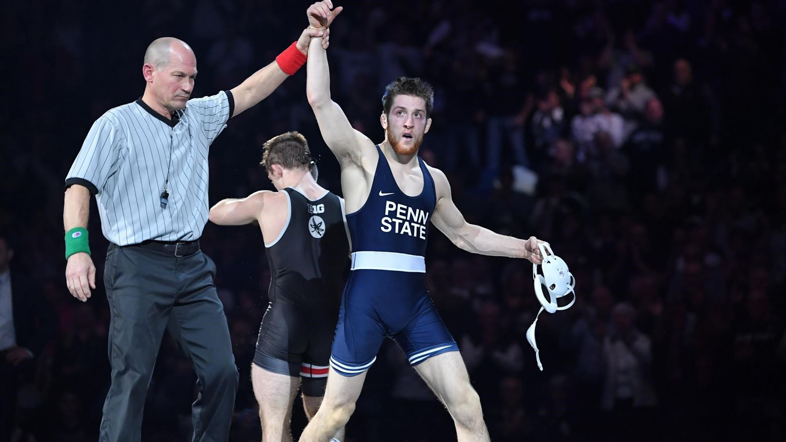

NC State vs North Carolina
The Tar Heels and Wolfpack have both built up top tier, respectable programs the last few years making the in-state rivalry a premier one to watch. The two teams will do battle Friday night in an ACC matchup that features 16 individuals ranked in the top 25. NC State comes in ranked 5th in FloWrestlings dual meet rankings while UNC comes in at 13th. The individual matchups of the dual to look out for will be at the 133, 141, 165, and 174 pound weight classes. At 133 12th ranked Jaimie Hernandez is expected to take on 13th ranked Jarrett Trombley. Hernandez comes into the matchup 2-0 against Trombley with the last meeting ending in a 1-0 victory for Hernandez.
At 141 former All American Tariq Wilson is expected to take on Tar Heels Junior Zach Sherman. Wilson, who lost their last matchup at the ACC tournament is eager for the rematch. “I’m looking forward to avenge that loss from the ACC tournament. It has been on my mind ever since nationals got canceled last year.” At 165 pounds, two seniors will square off when 11th ranked Thomas Bullard goes up against 14th ranked Kennedy Monday.
The two have yet to meet in a college competition but the matchup is one to be desired none the less. Finally, at 174 pounds, eighth ranked Devin Kane of UNC takes on 15th ranked Daniel Bullard. While Kane is ranked significantly higher than Bullard, he is 0-2 in their head to head matchups. This is a weight that could be pivotal in the dual.
Penn State vs Indiana
What makes this dual meet a must watch isn’t so much head to head matchups as it is the intrigue of what the young Nittany Lion team is going to look like this season. This will be Penn State’s first competition since the season started due to Covid-19 related issues. Cael Sanderson will be rolling out a relatively young lineup, but these wrestlers don’t lack much when it comes to an extensive resume. Everyone expected to compete Saturday for the Nittany Lions has accomplishments that range from state titles all the way to world level success. One thing we know about Sanderson when it comes to putting out a new group of starters (ala 2016) is when it comes time to compete they usually more than exceed expectations.
Oklahoma State vs Northern Iowa
Live on FloWrestling it’s a Big 12 matchup that features an exciting matchup out the gate. Undefeated Brody Teske has been making a splash this season for the Panthers and will take on the Cowboys true Freshman Trevor Mastrogiovanni. Mastrogiovanni, a talented wrestler in his own right also comes in with an undefeated record and will be tested here. For fans this dual is another chance to see guys like Kaid Brock, Boo Lewallen, and Travis Witlake in action. It’s also a chance for fans to watch Kyle Biscoglia who is putting together a nice season in his own right.
Image from Mark Selders
Oklahoma State vs Iowa State
A classic Big 12 matchup, the Cowboys will take on the Cyclones in a dual that features 12 ranked individuals. The premier matchup of the night will of course come at 141 pounds when sixth year Senior Kaid Brock takes on Iowa State’s Ian Parker. Parker is coming off a nice win over Oklahoma All American Dom Demas and is looking to add onto his wins over All Americans in this rubber match. Boo Lewallen, and Jarrett Degan will meet for the fourth time in their careers as Degan looks to bring the series more to his favor. Another big matchup for fans to look out for will be at 157 pounds when a battle of two legacy wrestlers breaks out between David Carr and Wyatt Sheets.
The two are ranked third and eighth respectively and Sheets will be looking to avenge his loss in the Big 12 finals a year ago.
Minnesota vs Rutgers
The Big 10 is loaded with talent up and down the board and it will be on display in Piscataway, New Jersey on Sunday. There will be ranked matchups across the board giving fans a chance to see the like of number one ranked Sebastian Rivera at 141 pounds, along with rising freshman John Poznanski at 184. The Golden Gophers bring a lineup headlined by top ranked heavyweight Gable Steveson, along with ninth ranked Patrick McKee. Mckee will be looking to get back on track following a tough loss to number one ranked Spencer Lee of Iowa. He’ll take on 22nd ranked Nic Aguilar in just one of many head to head ranked matchups here.
Wisconsin vs Nebraska
As I noted earlier the Big 10 is loaded with talent and this is another dual it isn’t lost upon. Out the gate, 125 features a matchup between eighth ranked Liam Cronin, and 17th ranked Eric Barnett. Barnett picked up a huge win during Wisconsin’s dual with Purdue, pinning Devin Schroeder who was ranked third in the country at the time. 184 will be the other premier matchup of the dual as it features two top ranked seniors in Wisconsin’s Chris Weiler, and Nebraska’s Taylor Venz. Weiler is currently ranked ahead of Venz at number seven but the last time these two faced it was Venz walking away with the victory via fall.
Rich Perez